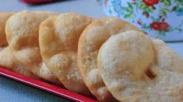

Tortas Fritas

Ingredients
- Flour
- Water or Milk
- Oil
- Salt
- Sugar
Steps
- Mix flour and salt in a bowl.
- Add water or milk gradually, stirring and then gently kneading as you go, until the mixture forms a soft, smooth dough (add more flour if the mixture becomes too wet)
- Roll dough out to about 1/4-inch thickness, and use a round cutter to make 3 1/2-inch circles. (Or separate dough into about 10 pieces, shape each piece into a ball, and flatten each ball into a pancake about 1/4 inch thick). Poke a hole in each center with your finger, which prevents them from puffing up.
- Add enough vegetable oil (or melt enough shortening or lard) in a small skillet to have a depth of about an inch of fat. Heat until fat sizzles when the dough is added. Fry breads in batches until golden brown on both sides, turning them once.
- Drain fried tortas on paper towels and sprinkle with sugar while still hot.
- Serve warm